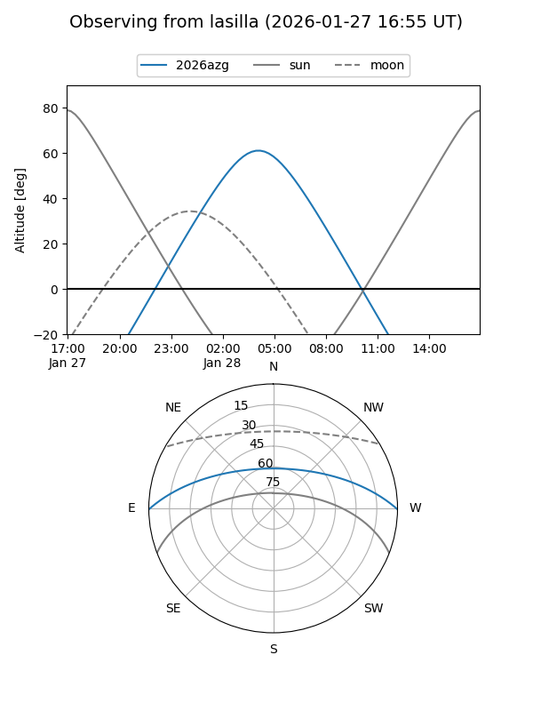
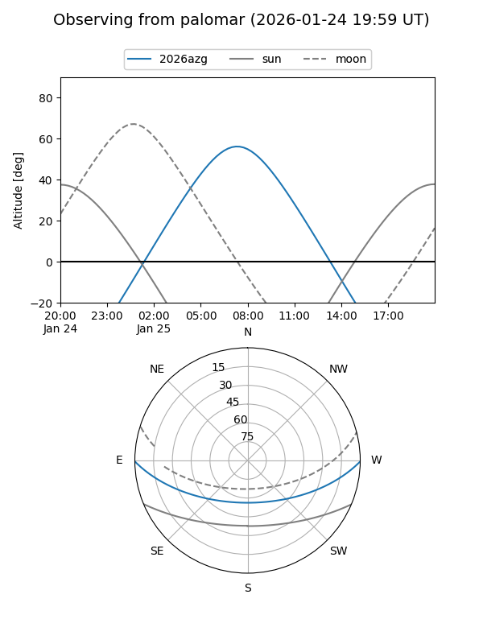

2026azg
Target 2026azg at 2026-01-26 03:36
Aliases and brokers:
FINK: link
Lasair: link
ALeRCE: link
TNS: link
YSE: link
alt names
ZTF26aacbaip (ztf,fink_ztf)
2026azg (tns,yse)
Coordinates:
equatorial (ra, dec) = 117.3778,-0.35158
equatorial (HMS+DMS) = 07:49:30.68,-00:21:05.70
galactic (l, b) = (219.9849,+12.72718)
Flags:
Photometry:
last ztfg=20.05
1 ztfg detections
Lightcurve

Visibility


Additional plots